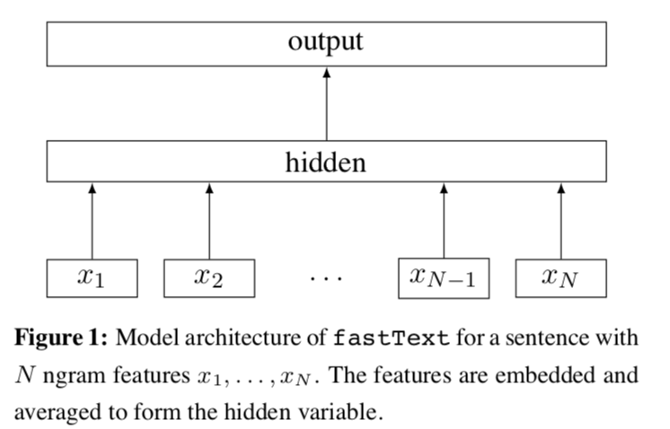
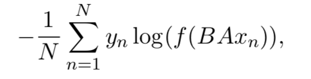

3.2 fastText分类
该算法由facebook 在2016年开源，也是word2vec作者写的， 典型应用场景是带监督的文本分类问题。
这篇文章讲了一个简单有效的文本分类的baseline， 与深度学习分类在准确性上相当，并且快度多个数量级。 用多核CPU， 可以10分钟内训练超过10亿词，并且在不到1分钟内，将312K个类中的50万个句子分类。
3.2.1 模型结构
一个简单有效的句子分类方法是用磁带模型，训练一个线性分类器, 例如逻辑回归，支持向量机。然而线性模型不能够在特征与label之间分享参数。 这可能限制他们的泛化在大的输出空间上，尤其是有些类的样本很少。这个问题通常的解决方案是把线性分类器进行因式分解 (Schutze, 1992; Mikolov et al., 2013)，或者使用多层神经网络。
下图展示了一个带有秩约束简单线性模型结构  x1-xN 为模型N ngram特征，用embedding表示后，求平均值作为隐藏层，然后用softmax输出每个类别的概率 这个结构与2013的word2vec的CBOW的区别是 中间的词被替换成label。
模型优化目标(负的对数似然函数)如下:  N为样本数，xn为normalized bag of features， yn为label，A、B为权重矩阵。矩阵参数A是基于word的look-up table，也就是A是词的embedding向量。 Ax_n矩阵运算的数学意义是将word的embedding向量找到后相加或者取平均，得到hidden向量。矩阵参数B是函数f的参数，函数f是一个多分类问题，所以f(BAx_n)是一个多分类的线性函数。
3.2.2 与word2vec的区别
相似的地方：
1. 图模型结构很像，都是采用embedding向量的形式，得到word的隐向量表达
2. 都采用很多相似的优化方法，比如使用Hierarchical softmax优化训练和预测中的打分速度。
不同的地方：
1. word2vec是一个无监督算法，而fasttext是一个有监督算法。word2vec的学习目标是skip的word，而fasttext的学习目标是人工标注的分类结果。
2. word2vec要求训练样本带有“序”的属性，而fasttext使用的是bag of words的思想，使用的是n-gram的无序属性。
3. fasttext使用的模型与word2vec的模型在结构上是一样的，拿cbow来说，不同的只是在于word2vec cbow的目标是通过当前词的前后N个词来预测当前词，在使用层次softmax的时候，huffman树叶子节点处是训练语料里所有词的向量
4. fasttext在进行文本分类时，huffmax树叶子节点处是每一个类别标签, 而word2vec的叶子结点，为所有的词。
5. fasttext有别于word2vec的另一点是加了ngram切分这个trick，将长词再通过ngram切分为几个短词
3.2.3 参数方面
1. loss function选用hs（hierarchical softmax）要比ns(negative sampling) 训练速度要快很多倍，并且准确率也更高。
2. wordNgrams 默认为1，设置为2以上可以明显提高准确率。
3. 如果词数不是很多，可以把bucket设置的小一点，否则预留会预留太多bucket使模型太大。
3.2.4 代码示例
词向量学习
./fasttext skipgram -input data.txt -output model
data.txt是utf8编码的训练样本，默认的n-grams是3到6。输出两个文件model.bin, model.vec包含词向量，一行一个词。model.bin是一个二进制文件，包含模型的参数、字典、和超参数，可以之后计算词向量或者重新优化。
获得词汇表外的词向量
用之前训练的模型 去计算词汇表之外的词向量。输入一个包含你想要计算的词的文件 queries.txt。用下面这条命令
./fasttext print-word-vectors model.bin < queries.txt
输出是每行一个词向量,也可以用pipes的形式
cat queries.txt | ./fasttext print-word-vectors model.bin
文本分类
这个library能够训练一个有监督的文本分类
./fasttext supervised -input train.txt -output model
train.txt 是文本文件，每行包含分词后的文本，与label， label默认前缀为 __label__。输出两个文件为: model.bin 和model.vec。模型训练完成后，你可以在测试集上计算 precision和recall at k(P@k and R@k)
./fasttext test model.bin test.txt k
或者在每一个label上，预测最可能的k个类别
./fasttext predict model.bin test.txt k
或者预测前k类的概率
./fasttext predict-prob model.bin test.txt k
k是可选的，默认为1。
如果想计算一句话或者一个段落的向量可以用一下命令
./fasttext print-sentence-vectors model.bin < text.txt
输出是每一行一个向量.
如果模型文件很大，可以quantize进行压缩，可以减小内存使用
./fasttext quantize -output model
github上没有给出输入，参考Language identification，有一行命令如下，输出还是训练样本
./fasttext quantize -input train.txt -output model -qnorm -cutoff 50000 -retrain
输出是model.ftz, 可以参考中的350M的模型文件压缩到1M以内，原理可参考Language identification。像之前的模型一样，可以用压缩后的模型来test 或者 predict。
./fasttext test model.ftz test.txt
python代码
import os
from fastText import train_supervised
def print_results(N, p, r):
print("N\t" + str(N))
print("P@{}\t{:.3f}".format(1, p))
print("R@{}\t{:.3f}".format(1, r))
if __name__ == "__main__":
train_data = os.path.join(os.getenv("DATADIR", ''), 'cooking.train')
valid_data = os.path.join(os.getenv("DATADIR", ''), 'cooking.valid')
# train_supervised uses the same arguments and defaults as the fastText cli
model = train_supervised(
input=train_data, epoch=25, lr=1.0, wordNgrams=2, verbose=2, minCount=1
)
print_results(*model.test(valid_data))
model = train_supervised(
input=train_data, epoch=25, lr=1.0, wordNgrams=2, verbose=2, minCount=1,
loss="hs"
)
print_results(*model.test(valid_data))
model.save_model("cooking.bin")
model.quantize(input=train_data, qnorm=True, retrain=True, cutoff=100000)
print_results(*model.test(valid_data))
model.save_model("cooking.ftz")